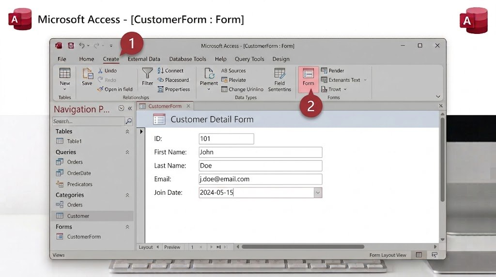

قد تكون الكتابة مباشرة في الجدول (Datasheet View) مربكة أحيانًا، خصوصًا لو كان الجدول يحتوي أعمدة كثيرة. يمنحك النموذج (Form) واجهة مرتّبة، حقلًا تحت الآخر بخط واضح، تسهّل إدخال البيانات على أي شخص، حتى لو لم يكن ملمًّا ببرنامج Access.

- من قائمة الجداول الجانبية، اضغط على جدول "Books" لتحديده.
- من تبويب "Create"، اضغط زر "Form" مباشرة، لينشئ Access نموذجًا تلقائيًا بجميع حقول الجدول.
- انتقل إلى عرض "Layout View" لتتمكن من تعديل ترتيب الحقول أو تنسيقها بسهولة عبر السحب والإفلات.
- احفظ النموذج باسم "إضافة كتاب".
- افتحه، وجرّب إضافة كتاب جديد مباشرة من النموذج؛ ستلاحظ ظهوره تلقائيًا في جدول Books.
هل تعلم؟
يرتبط النموذج بالجدول ارتباطًا حيًّا؛ أي تعديل تجريه من خلال النموذج ينعكس فورًا على الجدول، والعكس صحيح أيضًا.
جرّب بنفسك
أنشئ نموذجًا ثانيًا لجدول "Loans" (الاستعارات)، واستخدمه لتسجيل عملية استعارة جديدة.
الحل المتوقع
اتّبع الخطوات نفسها: حدد جدول Loans، ثم اضغط Create فـ Form. ولو كان الجدولان مرتبطين بعلاقة (من الدرس الخامس)، قد يعرض لك Access نموذجًا فرعيًا (Subform) تلقائيًا يبيّن بيانات الكتاب المرتبط.